Vasicek Model/Process#
The purpose of this notebook is to provide an illustration of the Vasicek Model/Processs and some of its main properties.
Before diving into the theory, let’s start by loading the libraries
matplotlib
together with the style sheet Quant-Pastel Light.
These tools will help us to make insightful visualisations.
import numpy as np
import matplotlib.pyplot as plt
def simulate_vasicek(T=1.0, N=500, x0=110, theta=0.25, mu=100, sigma=1.5, seed=None):
"""
Simulate one path of the Vasicek process using Euler–Maruyama scheme.
Returns
-------
t : np.ndarray
Time grid.
X : np.ndarray
Simulated path.
"""
if seed is not None:
np.random.seed(seed)
dt = T / N
t = np.linspace(0, T, N+1)
X = np.zeros(N+1)
X[0] = x0
for i in range(N):
dW = np.sqrt(dt) * np.random.randn()
X[i+1] = X[i] + theta * (mu - X[i]) * dt + sigma * dW
return t, X
# Parameters
x0 = 110
theta = 0.25
mu = 100
sigma = 1.5
T = 10 # time horizon
N = 1000
# Simulate
t, X = simulate_vasicek(T=T, N=N, x0=x0, theta=theta, mu=mu, sigma=sigma, seed=42)
# Plot
plt.figure(figsize=(10, 6))
plt.plot(t, X, label="Vasicek path")
# plt.axhline(mu, color="red", linestyle="--")
plt.title("Simulation of a Vasicek Process")
plt.xlabel("Time")
plt.ylabel("X(t)")
plt.legend()
plt.grid(True, alpha=0.3)
plt.show()
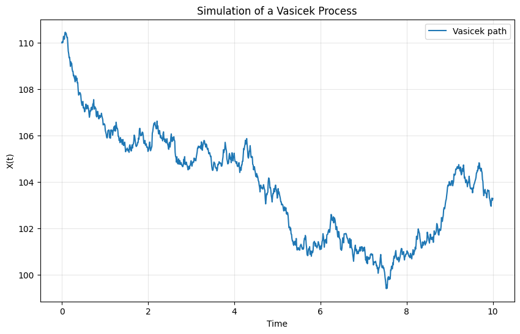
from aleatory.processes import Vasicek
process = Vasicek(initial=110, theta=0.25, sigma=1.5, mu=100, T=30)
process.plot(n=1000, N=1, title="Vasicek Process Simulation")
plt.show()
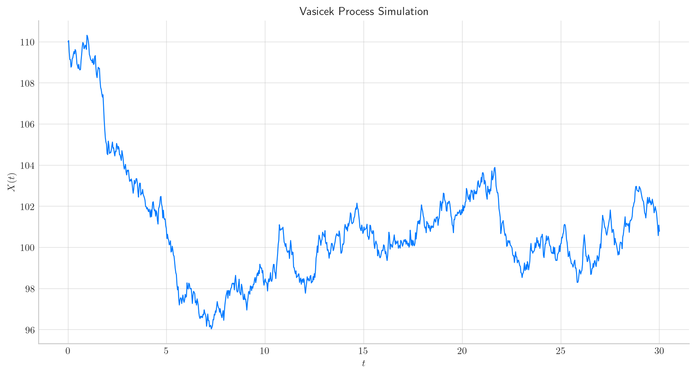
process.plot(n=1000, N=1, title="Vasicek Process Simulation")
plt.show()
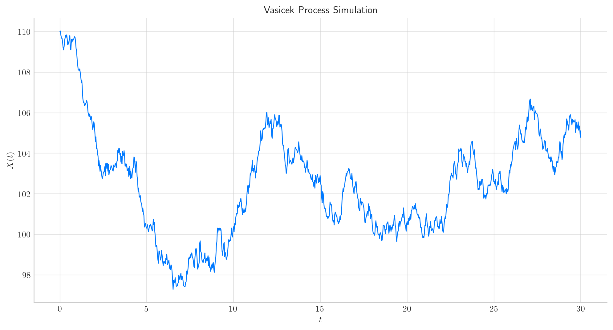
process.plot(n=500, N=5, title="Vasicek Process Simulation")
plt.show()
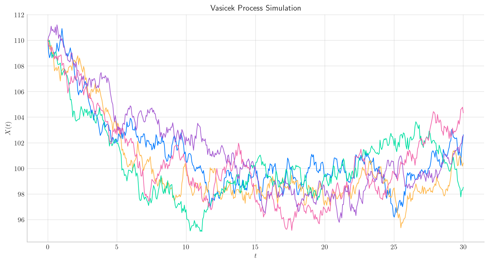
# process = Vasicek(initial=110, theta=0.25, sigma=1.5, mu=100, T=5)
process.plot(n=500, N=100, title="Vasicek Process Simulation")
plt.show()
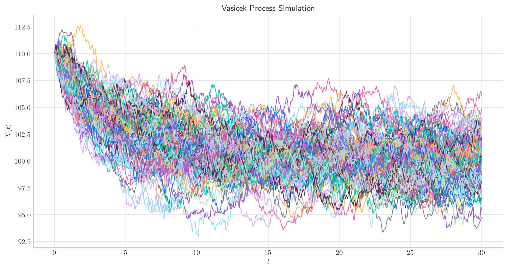
# process = Vasicek(initial=110, theta=0.25, sigma=1.5, mu=100, T=30)
process.draw(n=100, N=1000, marginal=False, title="Vasicek Process Simulation")
plt.show()
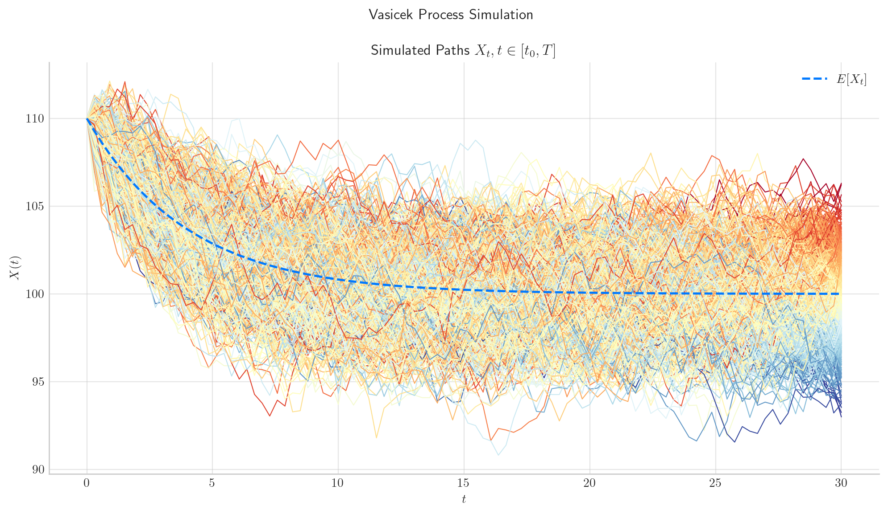
process.draw(n=100, N=300, marginal=False, envelope=True, title="Vasicek Process Simulation")
plt.show()
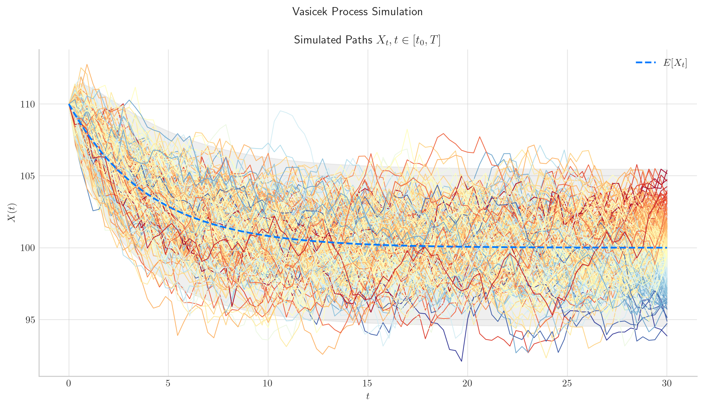
process.draw(n=200, N=200, marginal=True, envelope=True, title="Vasicek Process Simulation")
plt.show()
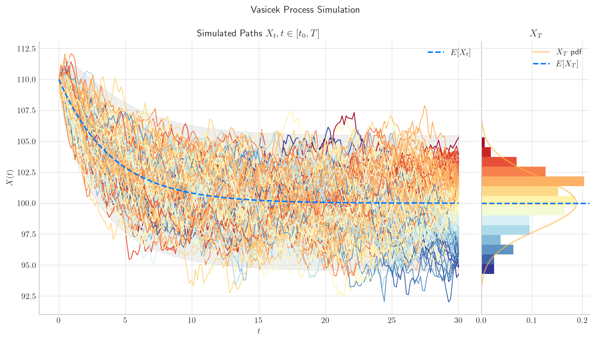
process = Vasicek(initial=105, theta=0.5, sigma=0.75, mu=100, T=20)
process.draw(n=200, N=200, marginal=True, envelope=True, colormap="PiYG")
plt.show()
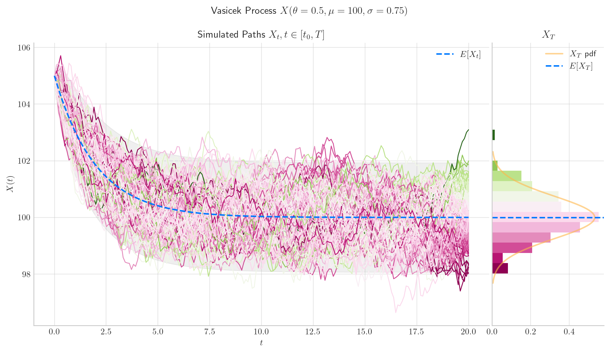
process = Vasicek(initial=105, theta=0.5, sigma=0.25, mu=100, T=20)
process.draw(n=200, N=200, marginal=True, envelope=True, colormap="PiYG")
plt.show()
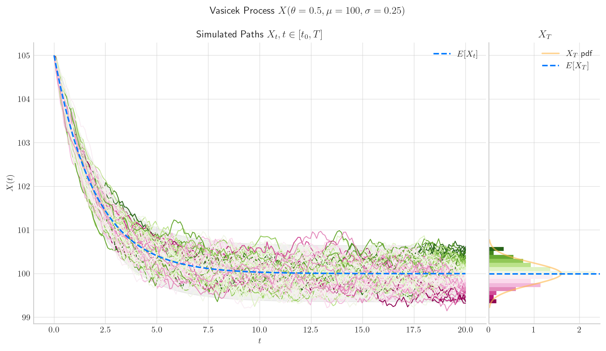
process = Vasicek(initial=95, theta=0.25, sigma=0.2, mu=100, T=20)
process.draw(n=300, N=200, marginal=True, envelope=True, colormap="PuOr")
plt.show()
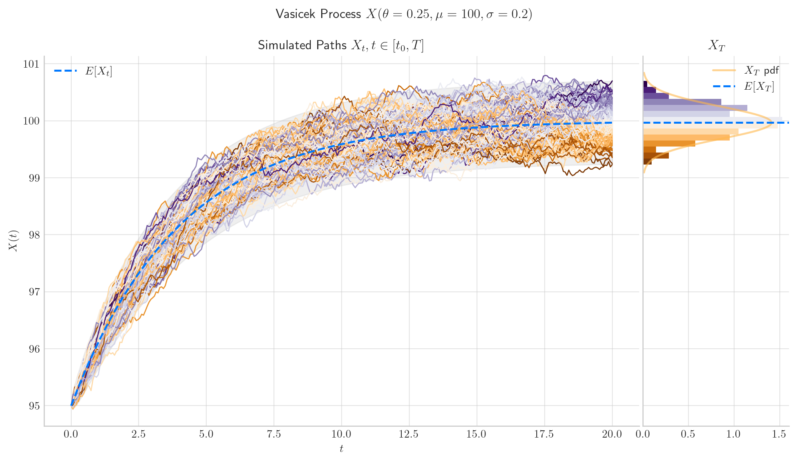
process = Vasicek(initial=95, theta=0.1, sigma=0.2, mu=100, T=20)
process.draw(n=300, N=200, marginal=True, envelope=True, colormap="PuOr")
plt.show()
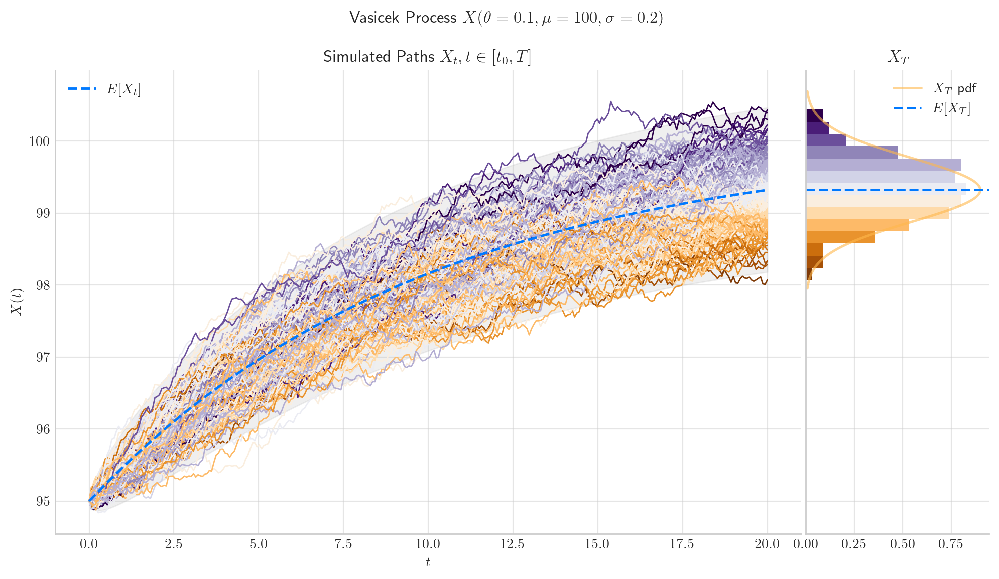
Marginal#
The marginal distribution \(X_t\) given an initial point \(x_0\), converges to
as \(t\) goes to infinity. Let’s make some simulations to illustrate this convergence.
First, we simulate 1000 paths from Vasicek(theta=1.0, mu=10.0, sigma=2.0, initial=1.0, T=1.0) over the interval \([0,1]\). Here, we can see the the distribution of \(X_1\) has mean around 6.0. This means that the process has not reached convergence, since we have not arrived to the long term mean \(\mu=10.0\).
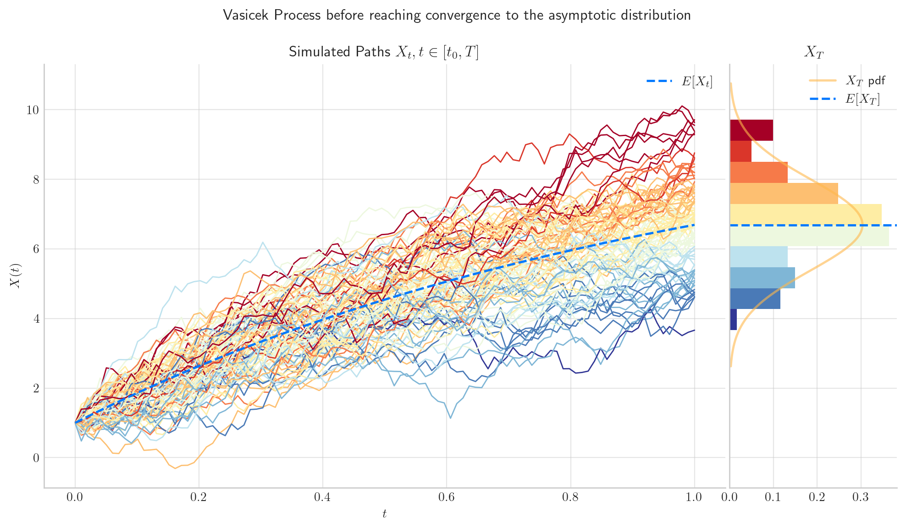
Now, we simulate 1000 paths from the same process Vasicek(theta=1.0, mu=10.0, sigma=2.0, initial=1.0, T=15) but this time over the interval \([0,15]\). In the picture, we can see the the distribution of \(X_{15}\) has mean equal to the long term mean \(\mu=10\). The process has reached convergence!
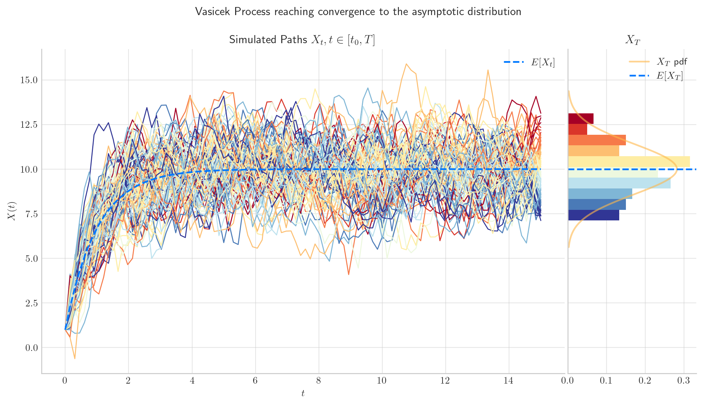
The parameter \(\theta\) determines the Speed of Convergence#
# from aleatory.processes import Vasicek
process = Vasicek(theta=5.0, mu=10.0, sigma=2.0, initial=1.0, T=1.0)
fig = process.draw(n=100, N=100, title='Vasicek Process quickly reaching convergence to the asymptotic distribution')
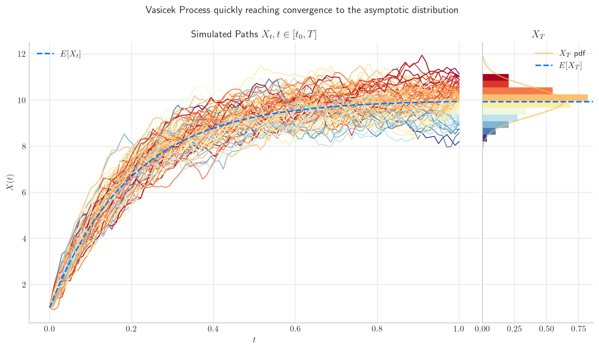
process = Vasicek(theta=0.1, mu=10.0, sigma=2.0, initial=1.0, T=50.0)
process.draw(n=100, N=100, title='Vasicek Process slowly reaching convergence to the asymptotic distribution')
plt.show()
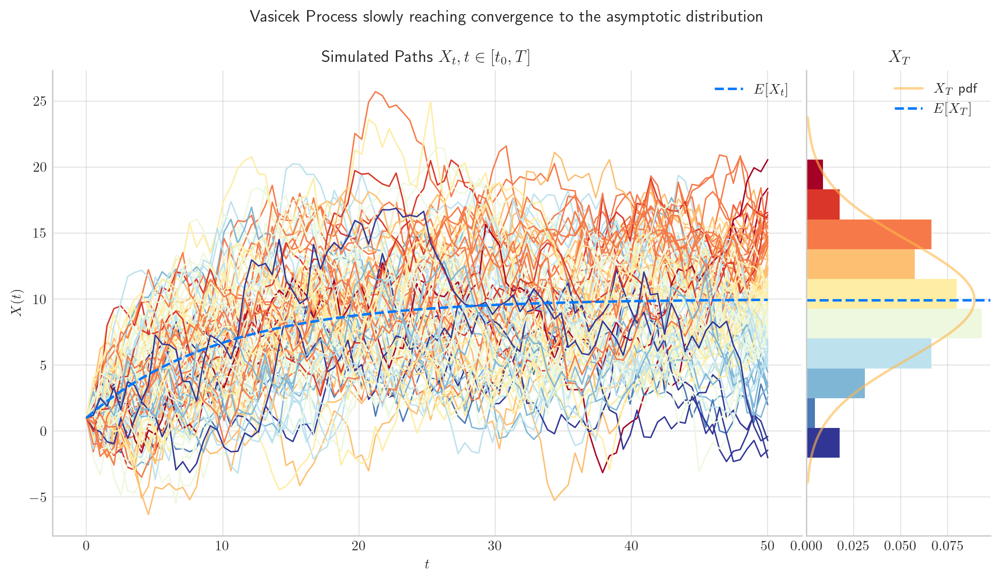
The parameter \(\sigma\) determines the volatility in the simulation#
# from aleatory.processes import Vasicek
process = Vasicek(theta=1.0, mu=10.0, sigma=0.5, initial=1.0, T=1.0)
fig = process.draw(n=100, N=100, title='Vasicek Process with low volatility')
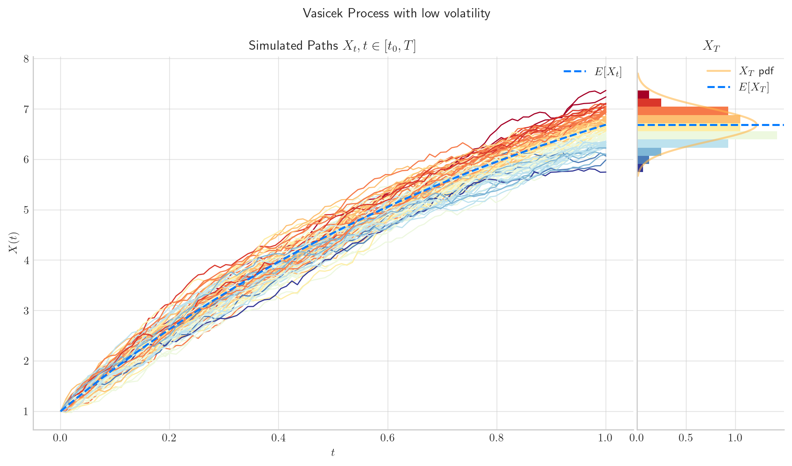
# from aleatory.processes import Vasicek
process = Vasicek(theta=1.0, mu=10.0, sigma=5.0, initial=1.0, T=1.0)
fig =process.draw(n=100, N=100, title='Vasicek Process with high volatility')
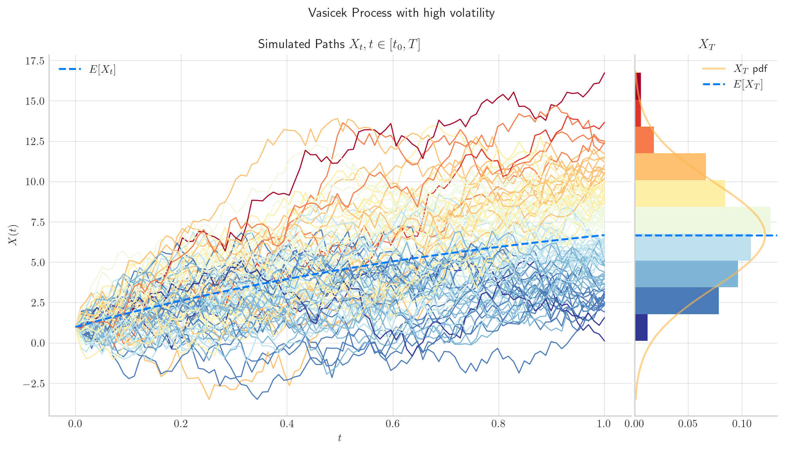
Visualisation#
To finish this note, let’s take a final look at a some simulations from the Vasicek process.
# from aleatory.processes import Vasicek
process = Vasicek(theta=0.5, mu=10.0, sigma=2.0, initial=-1.0, T=20.0)
fig = process.draw(n=200, N=200, envelope=True)
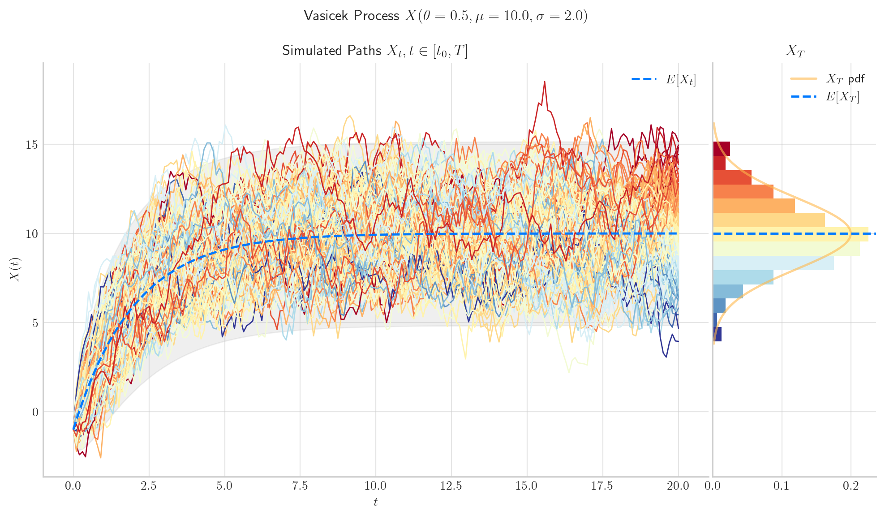
# from aleatory.processes import Vasicek
process = Vasicek(theta=0.5, mu=-10.0, sigma=2.0, initial=1.0, T=20.0)
fig = process.draw(n=200, N=200, envelope=True, colormap="cool", title='Vasicek Process')
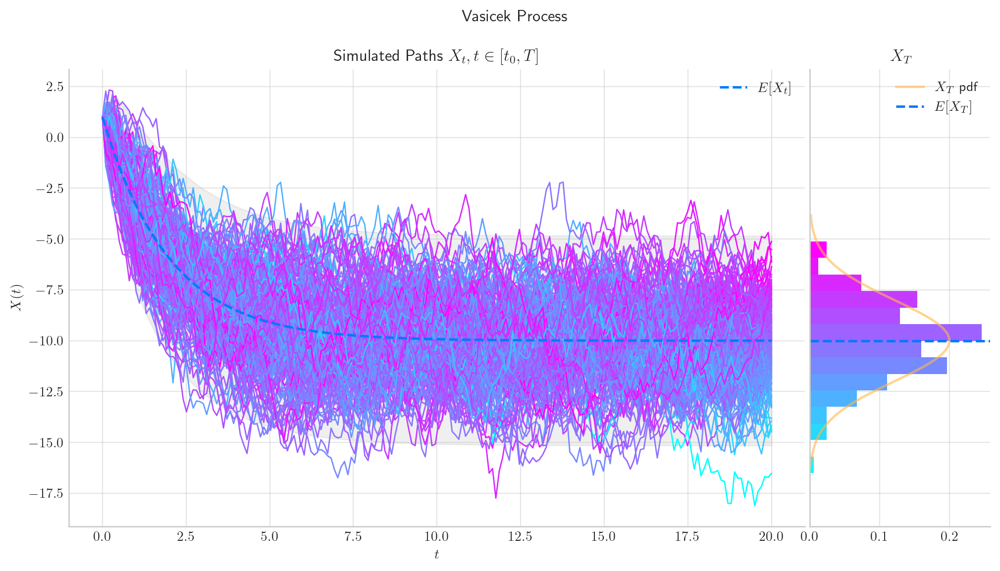
<>:9: SyntaxWarning: invalid escape sequence '\m'
<>:15: SyntaxWarning: invalid escape sequence '\m'
<>:20: SyntaxWarning: invalid escape sequence '\m'
<>:9: SyntaxWarning: invalid escape sequence '\m'
<>:15: SyntaxWarning: invalid escape sequence '\m'
<>:20: SyntaxWarning: invalid escape sequence '\m'
/var/folders/8_/ln4xq0tn2_9dclcldppw87f00000gn/T/ipykernel_33903/1139159019.py:9: SyntaxWarning: invalid escape sequence '\m'
plt.plot(ts, path[0], label= f'$x_0$ = 0, $\mu$ = -10')
/var/folders/8_/ln4xq0tn2_9dclcldppw87f00000gn/T/ipykernel_33903/1139159019.py:15: SyntaxWarning: invalid escape sequence '\m'
plt.plot(ts, path[0], label= f'$x_0$ = {x0:.0f}, $\mu$ = 0')
/var/folders/8_/ln4xq0tn2_9dclcldppw87f00000gn/T/ipykernel_33903/1139159019.py:20: SyntaxWarning: invalid escape sequence '\m'
plt.title('Four Paths from the Vasicek Model\n $dX_t = \\theta(\mu - X_t) dt + \sigma dW_t$\n with $\\theta = 1, \sigma = \sqrt{2}$')
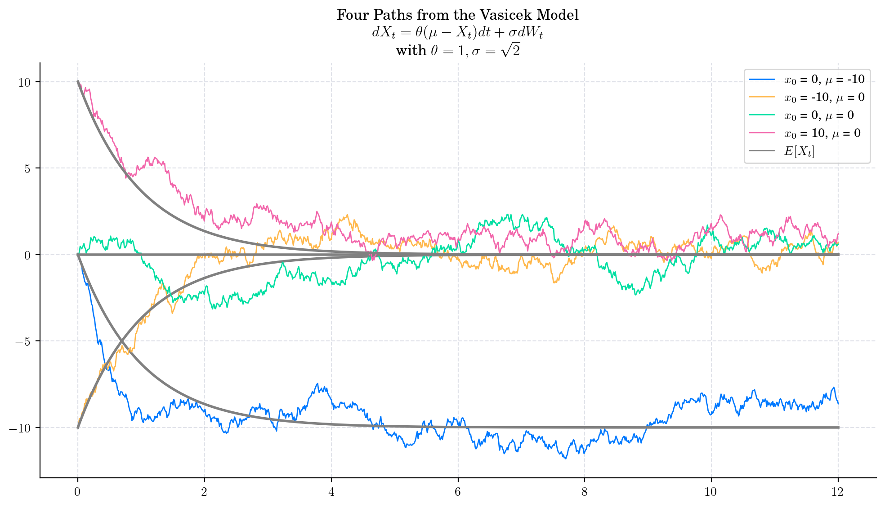
References and Further Reading#
Damiano Brigo, Fabio Mercurio (2001). Interest Rate Models – Theory and Practice with Smile, Inflation and Credit
Vasicek, O. (1977). “An equilibrium characterization of the term structure”. Journal of Financial Economics.